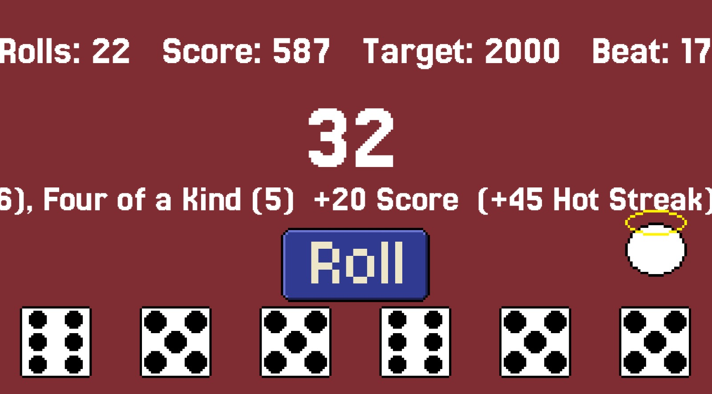
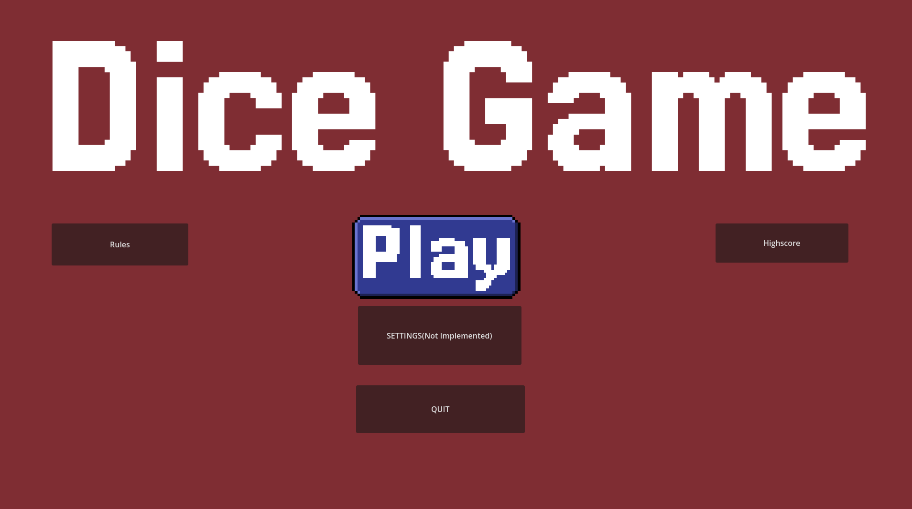

Das Projekt
Ich wollte ein kleines Game erstellen und war von dem Spiel Ballatro sehr inspiriet. Also dachte ich mir wieso nicht im Würfel style. Das spiel ist einfach aufgebaut und kann sogar sehr spaß machen wenn man den bogen raus hat.
Features
Man hat ein sogenanntes Target was man erreichen muss und diese Target erhöht sich jedes mal wenn man es erreicht. Auch bekommt man nach jedem Target eine kleine Auswahl an Boni/Perks die man auswählen kann um somit das nächste Target zu erreichen da man nur eine gewisse anzahl an Rolls hat.
Was ich gelernt habe
Diese Projekt war mein erstes eigenes Projekt wo ich von Code zu Art alles selber gemacht habe und ich bin sogar relativ stolz drauf letztendlich ist es noch Work in Progress wie man an den Screenshots erkennen kann und hoffentlich werde ich es demnächst auch so zuende bringen das es ein ordentliches Spiel ist. Sowie werde ich sobald es fertig ist dann auch auf Itch.Io hochladen so das es dann auch getestet werden kann.
Screenshots


Tech Stack
GDScript